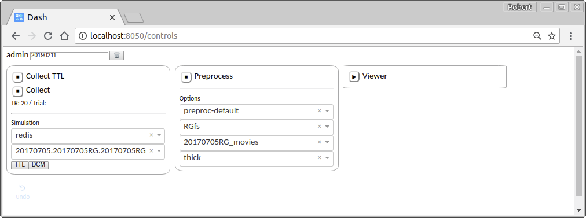

Controls¶
A simple web interface allows you to start and stop the various processes involved in a real-time experiment from one convenient location.
Collection¶
The left panel controls collection of data from the scanner. That involves two separate processes: one to collect TTL pulses, and another to collect incoming volumes.
Note
Simulating volumes. The control panel includes a simple way to generate simulated TTL and volumes. The first dropdown selects the TTL source: select “redis”. The second dropdown selects the dataset used for simulation. Any folder in the directory TEST_DATASET_DIRECTORY (configured in the .env file) that contains DICOM images will appear as a test dataset in this dropdown menu. Click the “TTL” button to simulate a TTL pulse, then click the “DCM” button to simulate the arrival of a volume. Pressing “DCM” before “TTL” will result in an error, since volumes should not appear before the the image is acquired!
Preprocessing¶
The middle panel controls the preprocessing pipeline. The first dropdown selects the preprocessing pipeline. The rest allow you to specify a few useful global parameters related to pycortex: the surface, transform, and mask.
WebGL Viewer¶
The right panel starts a process running a pycortex viewer. In order for data to be sent to the viewer, you must configure your pipeline to include a SendToPycortexViewer step. The viewer is hosted at http://localhost:8051.
Once you have configured all of the processes, you can start them by pressing the ▶ button. The button icon will turn to ■, indicating that pressing the button again will stop the process.
Troubleshooting¶
There are two ways to reset the processes:
The gentle way¶
Stop each running process by clicking the ■ buttons (until they change to ▶). Click the 🗑 button. Restart the processes.
The extreme way¶
If the gentle way fails to correct your problem, you can resort to stopping the docker container and starting it again.
<ctrl-c>
make docker.down
make docker.prune
make docker.up